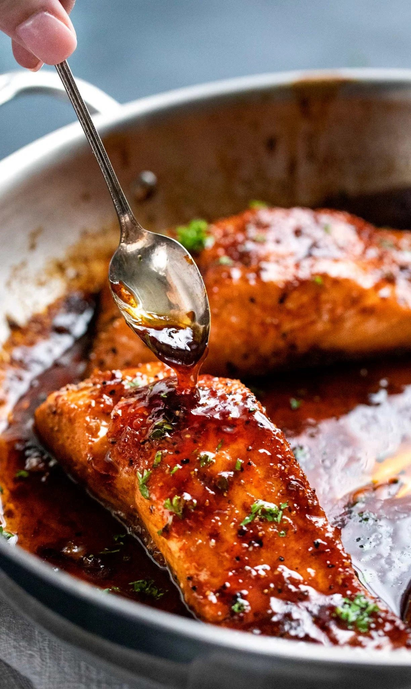

Lunch Items
Midday Must-have Meals

Honey Garlic Glazed Salmon
Quick and easy 20 minute meal.
Lightly seasoned salmon broiled and glazed with honey

Butter Chicken (Murch Makhani)
45 minute meal.
Popular Indian creamy buttery saucy chicken curry
Honey Garlic Glazed Salmon
Lightly seasoned salmon broiled and glazed with honey (20 min)
Ingredients
- 4 (6 oz each) Salmon filets
- 1/2 tsp kosher salt
- 1/2 tsp black pepper
- 1/4 tsp blackening seasoning (optional)
- 3 Tbsp butter
- 2 tsp olive oil
- 6 cloves garlic minced
- 1/2 cup honey
- 3 Tbsp water
- 3 Tbsp soy sauce
- 1 Tbsp sriracha sauce
- 2 Tbsp lemon juice
Salmon
Sauce
Instructions
- Pat salmon dry, then season with salt, pepper, paprika and blackening seasoning (if using). Set aside.
- IMPORTANT: Adjust oven rack to middle position, then preheat broiler. If you broil this with the rack up high the sauce will burn.
- Add butter and oil to a large, oven-safe skillet over MED-HIGH heat. Once butter is melted, add garlic, water, soy sauce, sriracha, honey and lemon juice and cook 30 seconds or so, until sauce is heated through.
- Add salmon, skin side down (if using salmon with skin), and cook 3 minutes. While salmon cooks, baste frequently with sauce from the pan by spooning it over the top of the salmon.
- Broil salmon for 5-6 minutes, basting with sauce once during the broil, until salmon is caramelized and cooked to desired doneness.
- Garnish with minced parsley if desired.
Butter Chicken (Murch Makhani)
Popular Indian creamy buttery saucy chicken curry (45 min)
Ingredients
- 28 oz (800g) boneless and skinless chicken thighs or breasts cut into bite-sized pieces
- 1/2 cup plain yogurt
- 1 1/2 tablespoons minced garlic
- 1 tablespoon minced ginger (or finely grated)
- 2 teaspoons garam masala
- 1 teaspoon turmeric
- 1 teaspoon ground cumin
- 1 teaspoon red chili powder
- 1 teaspoon of salt
- 2 tablespoons olive oil
- 2 tablespoons ghee (or 1 tbs butter + 1 tbs oil)
- 1 large onion, sliced or chopped
- 1 1/2 tablespoons garlic, minced
- 1 tablespoon ginger, minced or finely grated
- 1 1/2 teaspoons ground cumin
- 1 1/2 teaspoons garam masala
- 1 teaspoon ground coriander
- 14 oz (400 g) crushed tomatoes
- 1 teaspoon red chili powder (adjust to your taste preference)
- 1 1/4 teaspoons salt (or to taste)
- 1 cup of heavy or thickened cream (or evaporated milk to save calories)
- 1 tablespoon sugar
- 1/2 teaspoon kasoori methi (or dried fenugreek leaves)
Chicken Marinade
Sauce
Instructions
- In a bowl, combine chicken with all of the ingredients for the chicken marinade; let marinate for 30 minutes to an hour (or overnight if time allows).
- Heat oil in a large skillet or pot over medium-high heat. When sizzling, add chicken pieces in batches of two or three, making sure not to crowd the pan. Fry until browned for only 3 minutes on each side. Set aside and keep warm. (You will finish cooking the chicken in the sauce.)
- Heat butter or ghee in the same pan. Fry the onions until they start to sweat (about 6 minutes) while scraping up any browned bits stuck on the bottom of the pan.
- Add garlic and ginger and sauté for 1 minute until fragrant, then add ground coriander, cumin and garam masala. Let cook for about 20 seconds until fragrant, while stirring occasionally.
- Add crushed tomatoes, chili powder and salt. Let simmer for about 10-15 minutes, stirring occasionally until sauce thickens and becomes a deep brown red colour.
- Remove from heat, scoop mixture into a blender and blend until smooth. You may need to add a couple tablespoons of water to help it blend (up to 1/4 cup). Work in batches depending on the size of your blender.
- Pour the puréed sauce back into the pan. Stir the cream, sugar and crushed kasoori methi (or fenugreek leaves) through the sauce. Add the chicken with juices back into the pan and cook for an additional 8-10 minutes until chicken is cooked through and the sauce is thick and bubbling.
- Garnish with chopped cilantro and serve with fresh, hot garlic butter rice and fresh homemade Naan bread!
Food Recipe #3

tender, juicy chicken coated in teriyaki sauce. (30 min)
Ingredients
- 1.5 pounds chicken thighs or breasts
- salt and pepper
- 1 Tablespoon olive oil
- 1/2 cup low sodium soy sauce
- 1/4 cup brown sugar
- 1 Tablespoon Apple Cider Vinegar
- 1 garlic clove minced
- 1 teaspoon sesame oil
- 1/2 teaspoon freshly grated ginger
- 1/4 cup water
- 1 Tablespoon cornstarch
- Sesame seeds and green onions for garnish
Instructions
- Cut the chicken into one-inch pieces and salt and pepper. Heat olive oil in a wok or skillet over medium-high heat and add the chicken. Cook until no longer pink and remove and set aside on a plate.
- In a small bowl combine the soy sauce, brown sugar, apple cider vinegar, garlic, sesame oil, and ginger. In a separate small bowl whisk the water and cornstarch to make a slurry. Add the cornstarch to the sauce mixture and whisk.
- Add the sauce to the skillet and bring to a boil. Reduce heat and whisk until it starts to thicken.
- Add the chicken back to the skillet and toss until coated and heated through. Garnish with chopped green onions and sesame seeds. Serve over rice if desired.
Developer: Vincent Tran